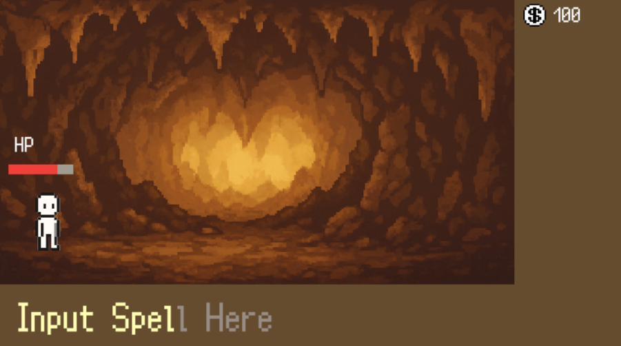

Keyborn
作品紹介
タイピングと2Dアクションを合わせたローグライクのゲームです。
このゲームのキーシステムは、タイピングで技名を入力して、その技を発動するという戦闘方法です。
ローグライク形式で、新しい技や強化アイテムを取得し、それを組み合わせるようなものを想定しています。

工夫点・技術的特徴
このゲームが通常のタイピングゲームと違う点は、ユーザが打つ文字を選択できるという部分です。
このシステムを導入することで、ユーザ側が何をするか考え、攻略を導き出す楽しさが演出できます。
作品リンク
Steamに配信予定